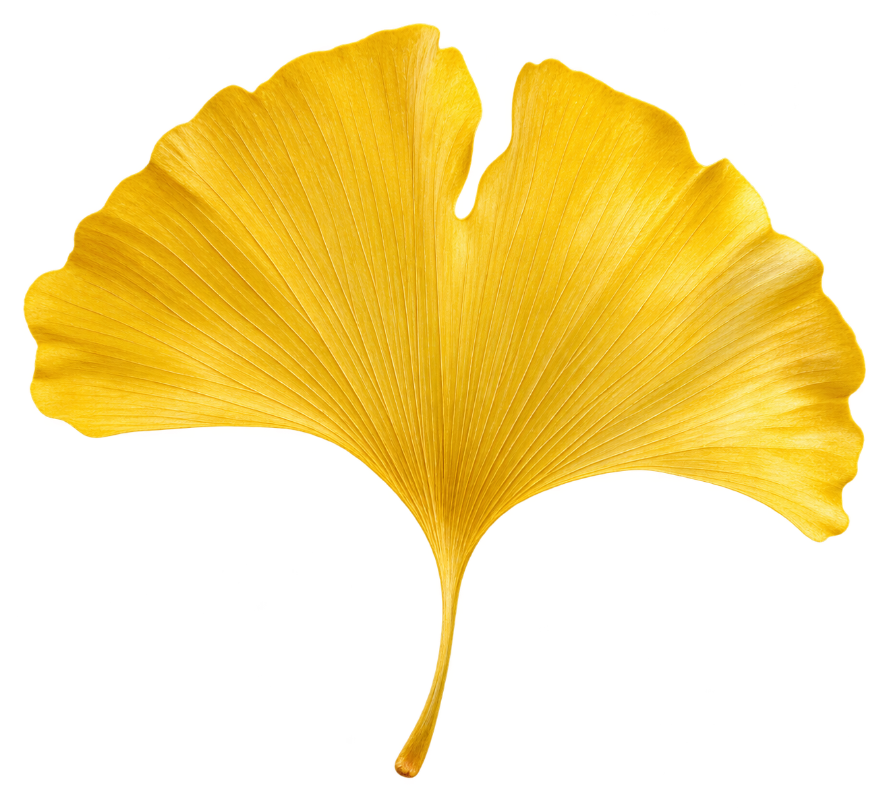

1. 나뭇잎 영역 선택
CCTV 장면을 가져오거나
현장 사진을 열어 주세요.사진은 서버로 전송하지 않습니다.
분석할 이미지 없음
선택 영역 직접 조절
도로·하늘을 제외하고 잎이 있는 부분만 선택해 주세요.
확대·선명도 보정
이미지 저장2배 보간 확대와 약한 선명화입니다. AI 복원이나 실제 해상도 향상은 아닙니다.

반계리 지금GINKGO WATCH방문 전, 한 번 더 확인
ITS에서 반계IC CCTV를 조회하고 있습니다…
두 손가락으로 확대·축소 · 확대한 화면을 드래그해 이동
영상 제공: 국토교통부 국가교통정보센터. 도로 관제 영상으로 카메라 방향에 따라 은행나무가 보이지 않을 수 있습니다. 연결되지 않으면 아래 지도 안내를 이용하세요.
연결 시간초과와 인증키 오류는 서로 다릅니다. 진단으로 ITS 서버 응답 여부를 확인할 수 있습니다.
카메라 방향·점검·야간 여부에 따라 나무가 보이지 않을 수 있습니다. 영상만으로 단풍 정도를 판단하기 어렵다면 최근 방문 사진도 함께 보세요.
국가교통정보센터 열기색을 읽고, 나무를 돌려보세요
CCTV 장면이나 현장 사진에서 나뭇잎 영역을 선택하면, 추출한 색 비율을 3D 나무에 적용합니다. 형태는 실제 나무의 넓은 수관과 여러 갈래 줄기를 참고한 근사 모델입니다.
CCTV 장면을 가져오거나
현장 사진을 열어 주세요.사진은 서버로 전송하지 않습니다.
분석할 이미지 없음
도로·하늘을 제외하고 잎이 있는 부분만 선택해 주세요.
2배 보간 확대와 약한 선명화입니다. AI 복원이나 실제 해상도 향상은 아닙니다.
3D 나무를 준비하고 있습니다…
사진 참고 근사 모델 · 실측 스캔 아님드래그: 회전 · 두 손가락/휠: 확대 · 사람 모형: 키 1.7m 비교 기준
수형 비율 참고: 높이 34.5m · 동서 37.5m · 남북 31m 원주시 안내
초기 색은 디자인 예시입니다. 오늘의 단풍 상태나 향후 절정을 예측한 결과가 아닙니다.
출발 전 확인하기
반계리 은행나무강원 원주 · 문막읍
현재 위치를 출발지로 사용합니다. 이동수단은 지도에서 변경할 수 있어요.
출발지 직접 선택위치는 길찾기에만 사용하며 사이트에 저장하지 않습니다.
인앱 브라우저에서는 Chrome 또는 Safari로 이 페이지를 열어 주세요. 네이버 지도 앱의 위치 권한도 확인해 주세요.
날씨를 불러오는 중입니다…
02 · 방문자가 남긴 기록
각 버튼은 검색 결과를 엽니다. 게시물이 없거나 예전 사진이 재게시될 수 있습니다.
03 · 비와 바람도 함께
예보를 불러오는 중입니다…
예보는 문막읍 주변 격자 기준이며 현장 관측과 다를 수 있습니다. 날씨만으로 단풍 절정을 예측하지 않습니다.